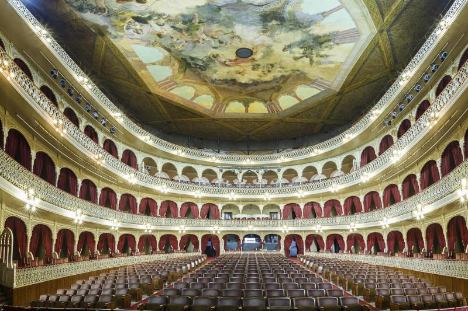

El Concurso Oficial de Agrupaciones Carvanalescas (COAC) es un evento anual celebrado en el Gran Teatro Falla de Cádiz, donde chirigotas, comparsas, coros y cuartetos compiten mostrando ingenio, humor y crítica social a través de canciones. Es el corazón del carnaval gaditano y atrae a miles de espectadores cada año.
